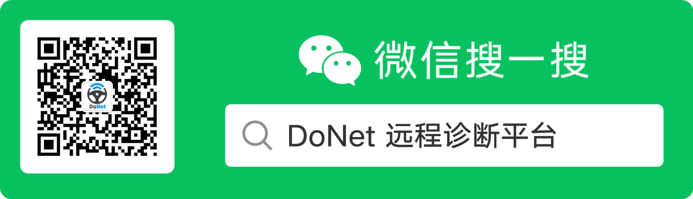
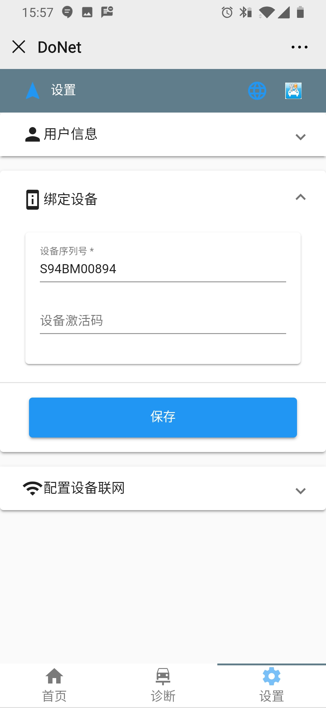
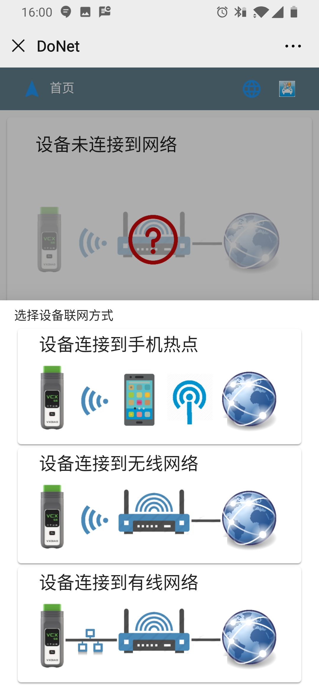

Note

DoNet Hyper remote mode requires only a single client M-Auto VCI device to achieve multipleBranddirect OEM software remote vehicle diagnosis。
This document describes Hyper Remote Diagnosis usageStep。
Necessary requirements
Server
- [readyOEM Softwarecomputer。…]
- [ConfirmInstalledgoodlatestNew VXManager ClientSoftwareand OEMDiagnostic DriverProgram。…]
- [Confirmcomputeravailablestable and fastNetworkConnection（Ethernet cable recommendedConnectionBroadband Router）。…]
Client
- [VCXDeviceConnectionVehicle。…]
- [ConfirmVehicle uses stable networkPowerPower Supply。…]
- [ConfirmDevice with stable fast internet connection（Ethernet cable recommendedConnectionBroadband Router）。…]
ClientoperationStep
1. Follow on WeChat
Scan QR code or WeChatSearch “DoNet Remote DiagnosisPlatform” and follow。

2. OpenRemote Diagnosis Platform
in DoNet in WeChat menuClick[Smart Diagnosis]Enter remote diagnosis platform。

3. Configure user information
First use requires configuring user information，Please enter phone number for contact。

4. Configure device information
First use requires bindingVCXDeviceSerial number。

5. Configure Device Network
Remote diagnosis requires internet connection，Click[Configure Device Network]。

6. SelectInternet connection method
SelectDevice connection method，following the wizardDoneconfigure network。

Ensure the internetConnectionstable and fast，device network latency less than100ms，Recommended firstSelectwired network。